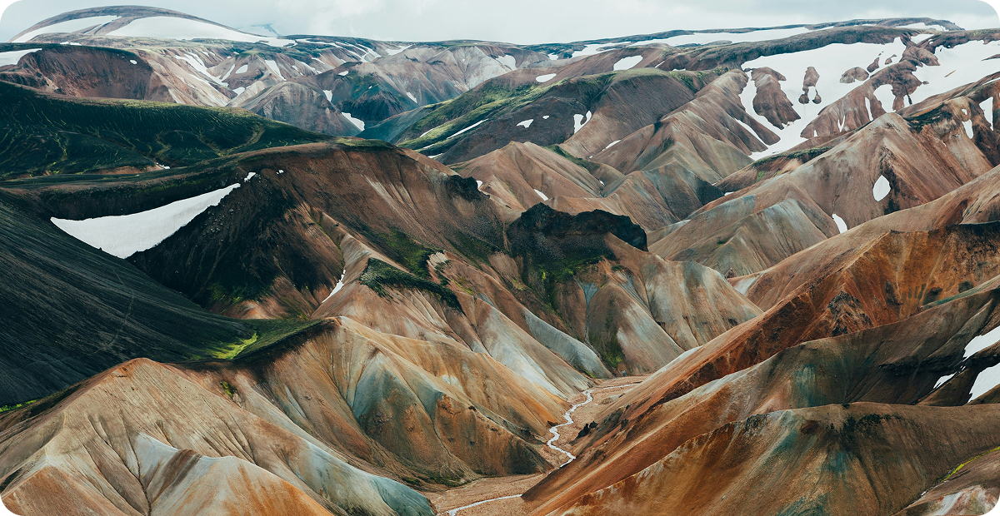
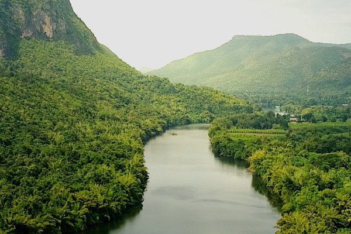
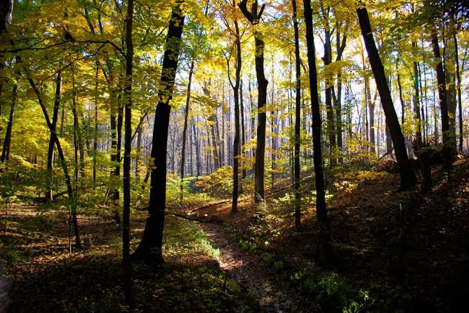

LINGKUNGAN • KEHIDUPAN • MASA DEPAN
Peduli Lindungi.
Menjaga lingkungan hari ini untuk kehidupan yang lebih baik di masa depan.

98%
Efisiensi meningkat
LINGKUNGAN • KEHIDUPAN • MASA DEPAN
Menjaga lingkungan hari ini untuk kehidupan yang lebih baik di masa depan.
Efisiensi meningkat
Peduli Lingkungan
mengurangi sampah dan membuat lingkungan jadi lebih sehat.
menanam pohon membantu menghasilkan udara yang lebih bersih.
Menghemat air dan energi dapat mengurangi pemborosan.
lingkungan yang bersih dapat mengurangi resiko penyakit.

Peduli Masa Depan
Perubahan kecil yang kita lakukan sekarang dapat memberikan dampak besar bagi lingkungan dan generasi mendatang.
Kurangi penggunaan plastik
Gunakan energi secara bijak
Tanam lebih banyak pohon
Jaga lingkungan sekitar

Peduli Lingkungan
Mari mulai peduli terhadap lingkungan melalui kebiasaan sederhana yang dapat memberikan dampak besar bagi Bumi
Mulai Peduli💚👍Mengurangi Sampah
👍Menghemat Air
👍Menanam Pohon
👍Menghemat Listrik
👍Menjaga Kebersihan
👍Mendaur Ulang Barang
Kadang-Kadang Masih Menggunakan Sampah Plastik
Menggunakan Air Agak Berlebihan
Jarang Merawat Tanaman
Sering Membiarkan Lampu Menyala
Sering Membuang Sampah Sembarangan
Langsung Membuang Barang
👎Banyak Sampah Memnumpuk
👎Sangat Boros Air
👎Tidak Merawat Tanaman
👎Pemborosan Energi
👎Selalu Membuang Sampah Sembarangan
👎Membuang Barang Yang Bisa Di Daur Ulang
Andi Pratama
Peduli LingkunganBiasakan melakukan hal kecil seperti membuang sampah pada tempatnya.
Gunakan air dan listrik secukupnya untuk menghemat sumber daya.
Ajak keluarga dan teman untuk bersama-sama menjaga lingkungan.

Peduli • Bumi
Bersama-sama kita dapat menjaga lingkungan, mengurangi sampah, dan menciptakan masa depan yang lebih baik.
Learn More